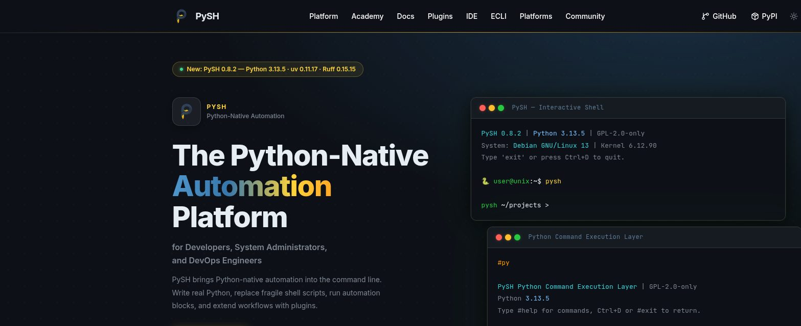

PySH: Python-first оболочка
Ещё один взгляд на командную строку — что если вместо мини-языка команд использовать прямо настоящий Python?
PySH — это реальная, установленная на этом компьютере программа, и все примеры на этой странице — настоящий, проверенный вывод именно этой установки, а не выдуманный текст.

pysh-shell, команда — pysh), а не про другие одноимённые инструменты.Что такое PySH
PySH — это интерактивная командная оболочка (shell — раздел 3.3), написанная на чистом Python и позиционирующая себя как Python-first альтернатива традиционным shell вроде Bash. Официальное описание с сайта: «The Python-Native Automation Platform for Developers, System Administrators, and DevOps Engineers».
Два подхода к командной строке
Традиционный shell отлично подходит для коротких интерактивных команд — но чем сложнее становится скрипт, тем сильнее чувствуется нехватка настоящего языка программирования: структурных исключений, тестов, читаемых модулей. PySH предлагает другое направление: писать автоматизацию сразу на Python, не переключаясь между двумя разными языками.
/bin/sh, не клон Zsh и не гарантированно совместим с любым существующим Bash-скриптом. Это самостоятельное направление с собственным, Python-ориентированным подходом — а не притворство, что внутри спрятан настоящий Bash.Запуск PySH — реальный вывод
На этом компьютере PySH уже установлен. Проверим это теми же командами, которыми вы проверяли бы любую другую программу:
command -v pysh
pysh --version/usr/bin/pysh
pysh 0.8.2Запустим PySH и посмотрим на настоящий баннер и приглашение:
🐍 PySH 0.8.2 | Python 3.13.5 | GPL-2.0-only
System: Debian GNU/Linux 13 | Kernel 6.12.101 | 11th Gen Intel Core i3-1115G4 | RAM 19 GiB
Type 'exit' or press Ctrl+D to quit.
┌─🐍 astra@soi ─ [~/Projects/Python_001] ─ git:feat/curriculum-v2-chapter-03
│ py3.13 · uv0.11.24 · ruff0.15.20 · rust1.85.0 · node26.3.1 · npm11.16.0
└─❯ Приглашение PySH — двухстрочное и информативное: имя пользователя, хост, текущая папка, ветка git — и вторая строка с версиями инструментов проекта (Python, uv, ruff, и другие, если они найдены). Это тот же дух, что и у «продвинутых» тем оформления для Bash/Zsh, только встроенный по умолчанию.
PySH понимает обычные команды
Несмотря на Python-first философию, привычные команды тоже работают — PySH умеет запускать внешние программы, пайпы и базовые операторы, как обычный shell:
└─❯ pwd
/home/astra/Projects/Python_001
└─❯ ls scripts | head -3
build_book.py
build_chapter_01.py
build_chapter_02.pyPython прямо в командной строке
А вот это уже отличает PySH от обычного shell: команда py
выполняет настоящий Python прямо на месте, в постоянном (сохраняющемся между вызовами)
контексте:
└─❯ py print("hello from python")
hello from python
└─❯ py x = 10
└─❯ py print(x)
10Переменные и импорты сохраняются между отдельными вызовами py
— x из первой команды доступен во второй. Для более длинного кода
есть и многострочный блок:
└─❯ py {
import os
targets = [p for p in os.environ.get("PATH", "").split(":") if p]
print(f"PATH entries: {len(targets)}")
}
PATH entries: 43Есть и третий, более «тяжёлый» режим — полноценный вложенный Python REPL со своим
>>> приглашением, который включается командой
#py прямо из обычного приглашения PySH:
└─❯ #py
PySH Python Command Execution Layer | GPL-2.0-only
Python 3.13.5
Type #help for commands, Ctrl+D or #exit to return to PySH.
>>> 2 + 2
4
>>> print("Привет, PySH!")
Привет, PySH!
>>> #exitBash-скрипт и PySH-подход: один пример
Небольшая иллюстрация разницы в стиле — не чтобы объявить один способ «плохим», а чтобы показать, откуда берётся Python-first идея.
count=$(ls | wc -l)
echo "Файлов: $count"py {
import os
count = len(os.listdir('.'))
print(f'Файлов: {count}')
}Локальная лаборатория: попробуйте PySH (необязательно)
Это — необязательное упражнение для вашего собственного компьютера. Оно не проверяется автоматически и не является обязательным условием для прохождения курса Python — PySH стоит знать, а пользоваться им дальше или нет — решать вам.
pip install pysh-shell); полная документация — в репозитории проекта, ссылка указана на PyPI-странице.